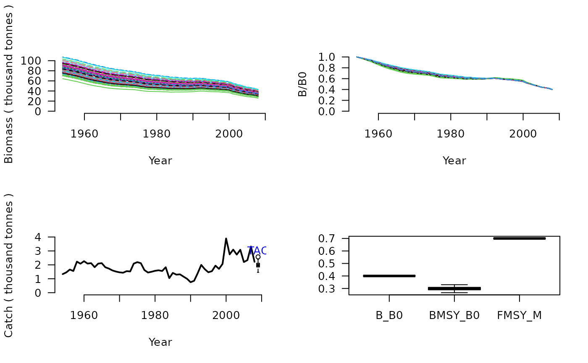

DBSRA.RdDepletion-Based Stock Reduction Analysis (DB-SRA) is a method designed for determining a catch limit and management reference points for data-limited fisheries where catches are known from the beginning of exploitation. User prescribed BMSY/B0, M, FMSY/M are used to find B0 and therefore the a catch limit by back-constructing the stock to match a user specified level of stock depletion.
DBSRA(x, Data, reps = 100, plot = FALSE)
DBSRA_40(x, Data, reps = 100, plot = FALSE)
DBSRA4010(x, Data, reps = 100, plot = FALSE)A position in the data object
A data object
The number of stochastic samples of the MP recommendation(s)
Logical. Show the plot?
An object of class Rec-class with the TAC slot populated with a numeric vector of length reps
DB-SRA assumes that a complete time-series of catch from the beginning of exploitation is available. Users prescribe estimates of current depletion \((D)\), biomass at MSY relative to unfished \(\left(\frac{B_\textrm{MSY}}{B_0}\right)\), the natural mortality rate \((M)\), and the ratio fishing mortality at MSY to M \(\left(\frac{F_{\textrm{MSY}}}{M}\right)\).
You may have noticed that you -the user- specify three of the factors that
make the quota recommendation. So this can be quite a subjective method.
In the MSE the MSY reference points (e.g., \(\left(\frac{F_\textrm{MSY}}{M}\right)\))
are taken as the true value calculate in the MSE with added uncertainty specified
in the Obs object (e.g Obs@FMSY_Mbiascv).
The catch limit, for the Base Version, is calculated as: $$\textrm{TAC} = M \frac{F_{\textrm{MSY}}}{M} D B_0$$
DBSRA: Base Version. TAC is calculated assumed MSY harvest rate
multiplied by the estimated current abundance (estimated B0 x Depletion)
DBSRA_40: Same as the Base Version but assumes 40 percent current depletion (Bcurrent/B0 = 0.4), which is
more or less the most optimistic state for a stock (ie very close to BMSY/B0 for many stocks).
DBSRA4010: Base version paired with the 40-10 rule that linearly throttles
back the TAC when depletion is below 0.4 down to zero at 10 percent of unfished biomass.
The DB-SRA method of this package isn't exactly the same as the original method of Dick and MacCall (2011) because it has to work for simulated depletions above BMSY/B0 and even on occasion over B0. It also doesn't have the modification for flatfish life histories that has previously been applied by Dick and MacCall (2011).
See Data-class for information on the Data object
DBSRA: BMSY_B0, Cat, Dep, FMSY_M, L50, vbK, vbLinf, vbt0
DBSRA_40: BMSY_B0, Cat, FMSY_M, L50, vbK, vbLinf, vbt0
DBSRA4010: BMSY_B0, Cat, Dep, FMSY_M, L50, vbK, vbLinf, vbt0
See Online Documentation for correctly rendered equations
Dick, E.J., MacCall, A.D., 2010. Estimates of sustainable yield for 50 data-poor stocks in the Pacific Coast groundfish fishery management plan. Technical memorandum. Southwest fisheries Science Centre, Santa Cruz, CA. National Marine Fisheries Service, National Oceanic and Atmospheric Administration of the U.S. Department of Commerce. NOAA-TM-NMFS-SWFSC-460.
Dick, E.J., MacCall, A.D., 2011. Depletion-Based Stock Reduction Analysis: A catch-based method for determining sustainable yields for data-poor fish stocks. Fish. Res. 110, 331-341.
DBSRA(1, MSEtool::ourReefFish, plot=TRUE)
#> TAC (median)
#> 0.7766401
DBSRA_40(1, MSEtool::ourReefFish, plot=TRUE)

#> TAC (median)
#> 1.975325
DBSRA4010(1, MSEtool::ourReefFish, plot=TRUE)
#> TAC (median)
#> 0.2572345